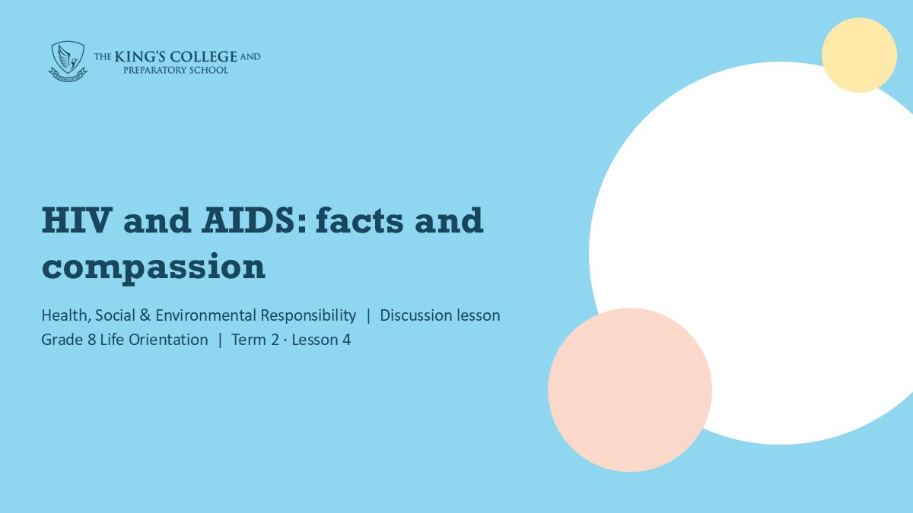

Term 2 · Lesson 4 · Discussion lesson
HIV and AIDS: facts and compassion
Start here
Today I will
- Explain how HIV is and is not spread
- Describe how people live well with treatment
- Show care and stand against stigma
True or false: you can get HIV from hugging someone, sharing a cooldrink or a mosquito bite.
Words to know
- HIV
- Human Immunodeficiency Virus: a virus that attacks the immune system.
- AIDS
- Acquired Immune Deficiency Syndrome: the late stage of HIV, when the immune system is so weak that other illnesses take hold.
- Immune system
- The body's defence system that fights germs and disease.
- ART
- Antiretroviral treatment: daily medicine that stops HIV from multiplying and keeps the immune system strong.
- Undetectable
- When ART has lowered the amount of HIV in the blood so much that a test can't find it; the person stays healthy.
- Stigma
- Unfair, negative beliefs about a group of people that lead to shame, fear and exclusion.
Slides

Videos
Notes
South Africa has more people living with HIV than any other country, about 8 million. Almost every South African knows someone affected by it. Knowing the facts protects you, and knowing how to respond with compassion protects others from stigma and loneliness.
HIV and AIDS: what is the difference?
HIV (Human Immunodeficiency Virus) attacks the immune system, which is the body's defence against germs. It destroys a type of white blood cell called CD4 cells. Without treatment, the immune system slowly becomes weaker over several years.
AIDS (Acquired Immune Deficiency Syndrome) is the late stage of HIV infection, when the immune system is so weak that the person gets serious illnesses (called opportunistic infections) such as TB or pneumonia. With treatment, most people with HIV never develop AIDS.
How HIV is spread
HIV lives in certain body fluids: blood, the fluids involved in sexual contact, and breast milk. It can only be passed on when one of these fluids from a person with HIV enters another person's bloodstream. HIV is spread through:
- Blood-to-blood contact: sharing needles, syringes, razors, or tattoo and piercing equipment that has not been sterilised.
- From a mother to her baby during pregnancy, birth or breastfeeding, if the mother is not on treatment.
- Unprotected sexual contact.
- Blood transfusions in the past (in South Africa all donated blood is now tested).
How HIV is NOT spread
HIV is a fragile virus that cannot survive for long outside the body. You cannot get HIV from:
- hugging, shaking hands, holding hands or playing sport together;
- sharing cups, plates, cutlery, food, towels or toilets;
- coughing, sneezing, saliva, tears or sweat;
- mosquito or other insect bites;
- swimming pools or sitting next to someone in class.
Preventing HIV
| Prevention | How it protects |
|---|---|
| Abstinence and faithfulness | Waiting for marriage, and staying faithful to one husband or wife, protects against HIV passed on through sexual contact. |
| Never share sharp objects | Don't share needles, razors or tattoo equipment; use only sterilised equipment. |
| Universal precautions | Wear gloves (or use a plastic bag) when helping someone who is bleeding, and cover cuts. |
| Testing and treatment in pregnancy | A mother on ART is very unlikely to pass HIV to her baby. |
| Testing | Knowing your status means you can start treatment early and protect others. |
Living with HIV: treatment
There is no cure for HIV yet, but there is very effective treatment. ART (antiretroviral treatment) is medicine that stops HIV from multiplying. It is free at government clinics. People with HIV take ART every day, for life.
- ART keeps the immune system strong, so the person stays healthy and does not develop AIDS.
- When ART lowers the amount of virus in the blood so much that a test cannot detect it, the person is 'undetectable'. They stay healthy and cannot pass HIV on through sexual contact.
- ART only works if it is taken every day. Missing doses allows the virus to grow and become resistant to the medicine.
- Healthy living helps too: nutritious food, exercise, enough sleep, no smoking or alcohol, and treating other illnesses early.
- With treatment, people with HIV can expect to live a long, normal life: they go to school, work, play sport, marry and have healthy children.
Stigma and discrimination
Stigma means unfair, negative beliefs about a group of people. HIV stigma is often based on fear and myths ('you can catch it by hugging') or on judging people ('they must have done something wrong'). Discrimination is when stigma becomes action: excluding someone, gossiping, refusing to share a classroom or a meal.
| Effects of stigma | Why it is dangerous |
|---|---|
| People are afraid to test | They only find out when they are very ill, and may pass HIV on without knowing. |
| People hide their medicine | They miss doses, and the treatment stops working. |
| Loneliness, shame and depression | Mental health suffers; people feel rejected by friends, school or even church. |
| Children are teased or excluded | Children with HIV, or whose parents have HIV, may avoid school. |
A person's HIV status is private: the right to privacy (section 14) means nobody has to tell, and nobody may share someone else's status without permission. Discrimination against people with HIV is against the law.
How to care and support
- Treat people with HIV exactly as you treat everyone else: include them, sit with them, share a meal.
- Don't gossip or guess about anyone's status, and stop rumours when you hear them.
- Speak up against jokes and myths with the facts.
- Support families affected by HIV, for example learners who care for a sick parent or have lost a parent.
- Encourage people to test and to keep taking their treatment.
A biblical view
In Mark 1:40–42 a man with leprosy came to Jesus. People were afraid of leprosy and kept far away from anyone who had it. Jesus was filled with compassion, reached out and touched him. Christians are called to follow His example: to show love, include people others avoid, and never judge or shame those who are ill.
How HIV affects the immune system
Think of the immune system as the body's army. CD4 cells are like the generals that organise the fight against germs. HIV gets into the CD4 cells, uses them to make copies of itself and destroys them. Without treatment, the number of CD4 cells slowly drops until the army has no leaders and the body can no longer fight off infections. ART stops HIV from making copies of itself, so the CD4 cells can recover and the army stays strong.
HIV in South Africa
- About 8 million South Africans live with HIV, more than in any other country.
- South Africa runs the largest HIV treatment programme in the world, and ART is free at government clinics.
- Testing is free and confidential at clinics, and there are also self-test kits.
- Thanks to testing and treatment during pregnancy, very few babies in South Africa are now born with HIV.
- World AIDS Day is on 1 December. The red ribbon is a symbol of support for people living with HIV.
Case study: Aarav's neighbour
Aarav's neighbour, Mrs Dlamini, has been living with HIV for fifteen years. She takes her ART every morning with breakfast, walks every afternoon and runs a vegetable garden that feeds several families in the street. Her viral load is undetectable. When some children in the street started saying that Mrs Dlamini was 'dying of AIDS' and that nobody should eat her vegetables, Aarav was upset. He knew it wasn't true: you can't get HIV from food. With his parents' encouragement he told the children the facts and kept helping Mrs Dlamini in her garden on Saturdays. Soon the other children joined him.
Questions to think about: Which myths did the children believe? How could the rumours have affected Mrs Dlamini? What does Aarav's response teach us about compassion and courage?
Responding with compassion
| Instead of… | Try… |
|---|---|
| Guessing or gossiping about someone's status | Respecting their privacy; it is their story to tell |
| Avoiding a person or their family | Including them and treating them like everyone else |
| Laughing at HIV jokes | Saying 'That's not true and it's not funny' |
| Judging how someone got HIV | Remembering that many people got HIV through no choice of their own, and that every person deserves care |
Worked exam answers
Question: Differentiate between HIV and AIDS. (1 x 2) (2)
Answer: HIV is the virus that attacks the immune system ✓, whereas AIDS is the late stage of HIV infection when the immune system is so weak that serious illnesses take hold ✓.
Question: Explain how stigma can stop a person from getting tested for HIV. (1 x 2) (2)
Answer: The person may fear being judged, gossiped about or rejected if people find out ✓, so they avoid testing and may only find out they have HIV when they are already very ill ✓.
Know the difference between HIV and AIDS, be able to list ways HIV IS and is NOT spread, explain what ART does, and explain (with an effect) how stigma harms people living with HIV.
Know the facts, care without fear, and never spread stigma.
Jesus reached out and touched a man with leprosy, a disease everyone feared. How can we follow His example with people living with HIV?
In class: Stand against stigma
- Scenario: a new player in Mia's netball team takes medicine every morning. Someone starts a rumour that she has HIV and tells the team not to share water bottles or hug her after matches.
- Is there any real risk to the team? Use the facts to explain.
- How might the new player feel? What could the rumour do to her?
- What could Mia do? How could Coach Didi help?
- Each group shares one idea.
Test yourself
- Name TWO ways in which HIV is spread.
- Name TWO ways in which HIV is NOT spread.
- What does ART do?
Show answers
1. Any two: blood-to-blood contact (sharing needles or razors), mother to baby (pregnancy, birth, breastfeeding), unprotected sexual contact. 2. Any two: hugging, sharing cups or food, toilets, mosquitoes, sport, coughing. 3. It stops HIV from multiplying, so the immune system stays strong and the person stays healthy.
Finished early?
Make quick cards that answer common myths about HIV with facts.
- In your LO book, draw four small cards.
- On the front of each, write a myth about how HIV is spread (for example, 'You can get HIV from a hug').
- On the back, write the fact from the Handbook.
- Finish with one kind sentence you could say if you heard someone gossiping about a person's HIV status.